Jiří Filip · Export PDF 7. 10. 2026 · termín výuky neověřen · PDF, strana 7
Souřadnice a interpolace
Appearance visualization: the pipeline
Texture mapping.
World-to-local coordinate transformation and local texture space.
Local texture-space and measured-direction interpolation.
Point light versus environment illumination.
Anti-aliasing.
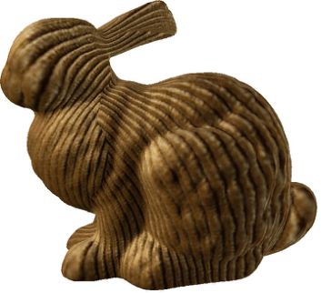
Jiří Filip · původní ilustrace · PDF 8
Původní snímek · 8
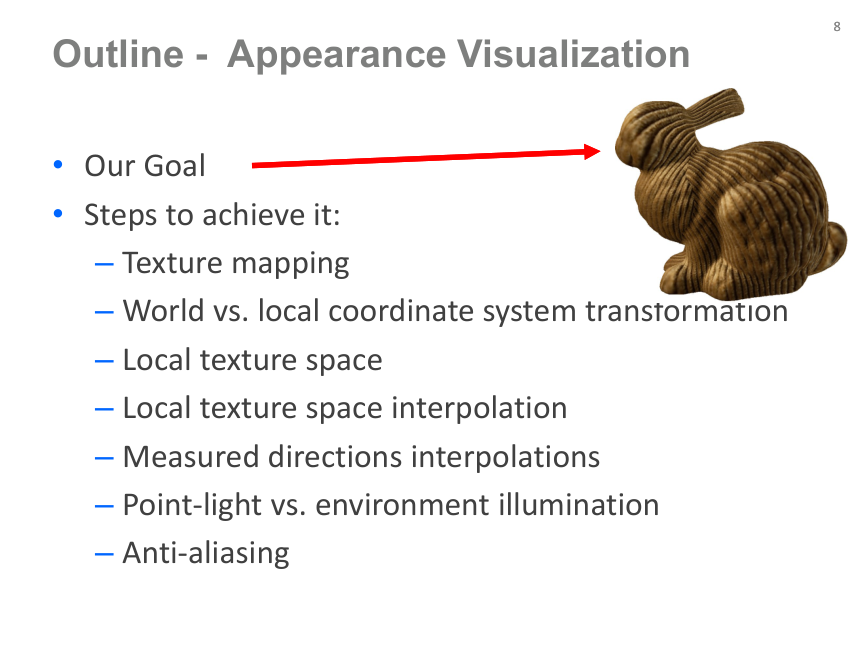
Jiří Filip · Export PDF 7. 10. 2026 · termín výuky neověřen · PDF, strana 8
Souřadnice a interpolace
Texture mapping
3D geometry v is paired with per-vertex 2D texture coordinates (s,t).
The unwrapped triangle mesh maps the 2D texture onto the 3D surface.
The original illustration shows the mapping and seams.
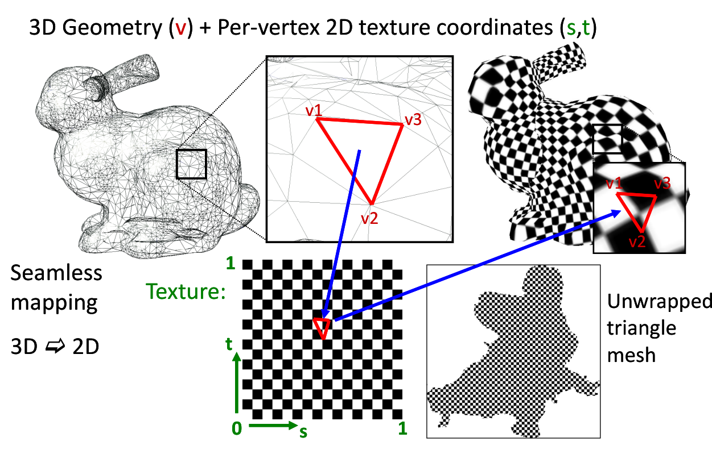
Jiří Filip · původní ilustrace · PDF 9
Původní snímek · 9
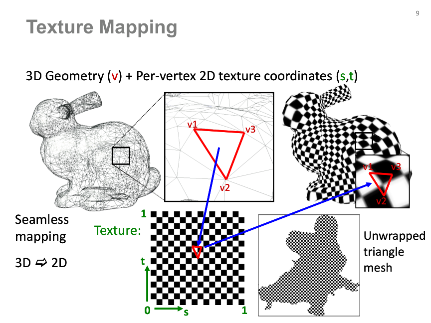
Jiří Filip · Export PDF 7. 10. 2026 · termín výuky neověřen · PDF, strana 9
Souřadnice a interpolace
World versus local coordinate systems
World-space light and view directions must be expressed in the local texture frame.
The local frame follows the surface and texture orientation.
The source contrasts world light/view positions Lw,Vw with local directions L,V.
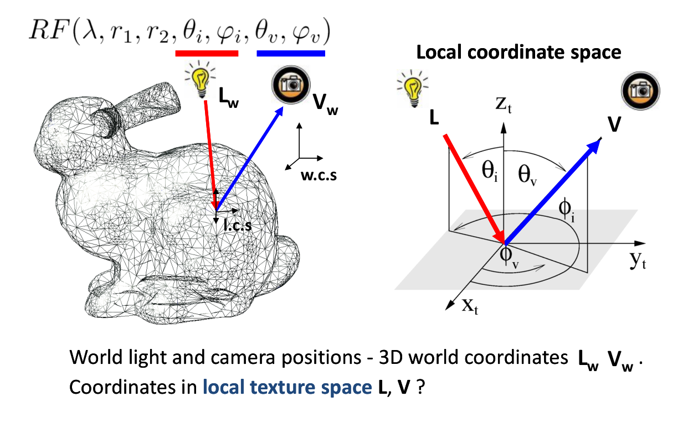
Jiří Filip · původní ilustrace · PDF 10
Původní snímek · 10
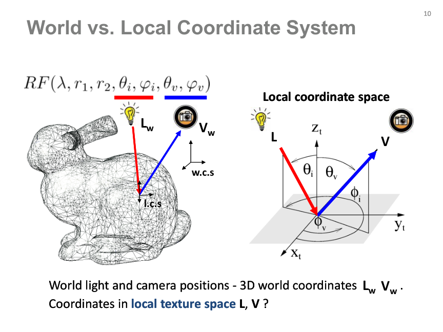
Jiří Filip · Export PDF 7. 10. 2026 · termín výuky neověřen · PDF, strana 10
Souřadnice a interpolace
Local texture space
N: averaged per-face normals. T: derived from geometry and texture coordinates (v,s,t).
B: cross product of N and T.
T, B and N define the transformation between world and local coordinates.
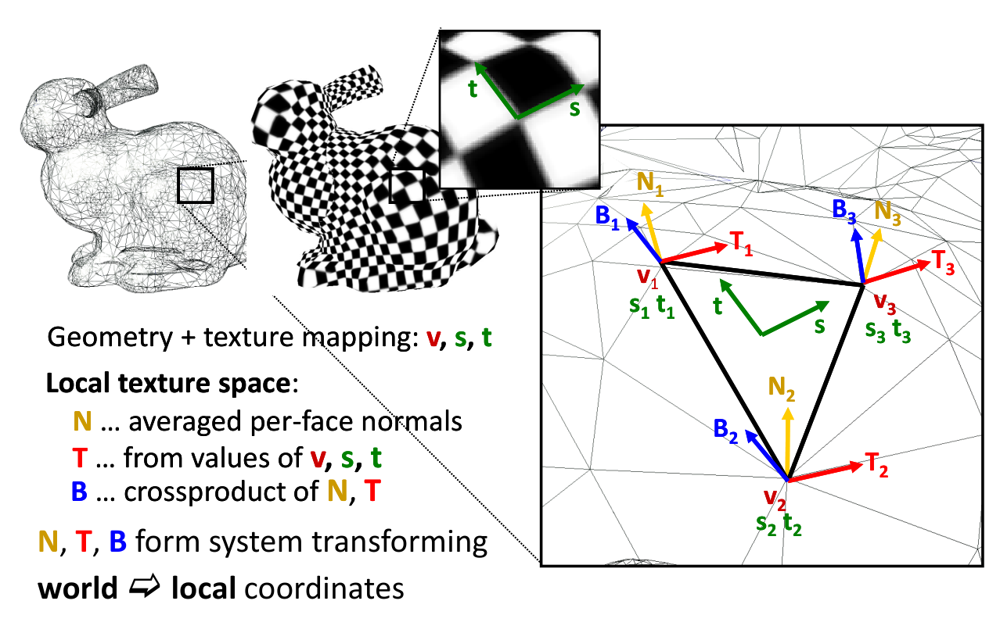
Jiří Filip · původní ilustrace · PDF 11
Původní snímek · 11
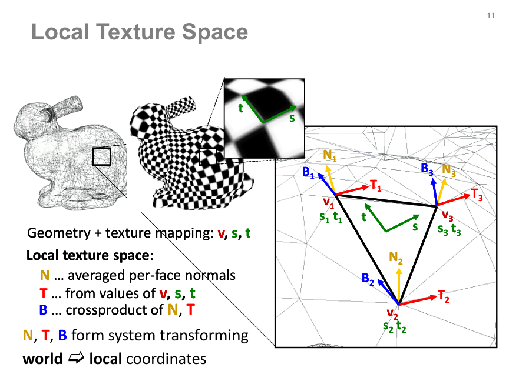
Jiří Filip · Export PDF 7. 10. 2026 · termín výuky neověřen · PDF, strana 11
Souřadnice a interpolace
World-to-local direction transformation
Obtain illumination and view directions in the local texture frame.
For an orthonormal frame: Llocal = (T·Lw, B·Lw, N·Lw); likewise for the view direction.
The original matrix and geometric construction are retained in the source panel.
Poznámka GRAFIT: interpolace vektorů obecně nezachová jejich jednotkovou délku ani kolmost. Při použití lokálního rámce je potřeba jeho normalizace a případná ortogonalizace.
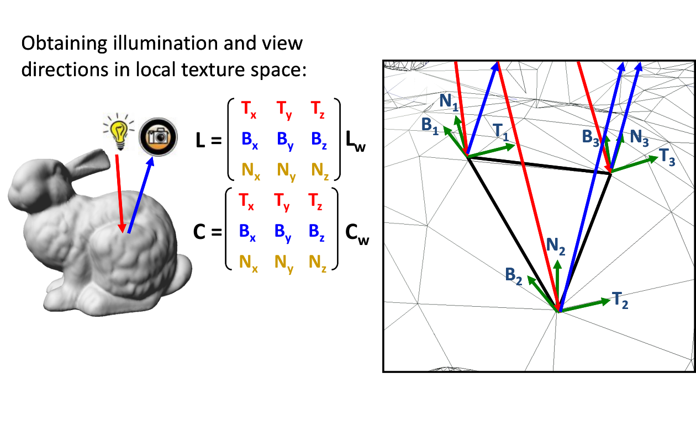
Jiří Filip · původní ilustrace · PDF 12
Původní snímek · 12
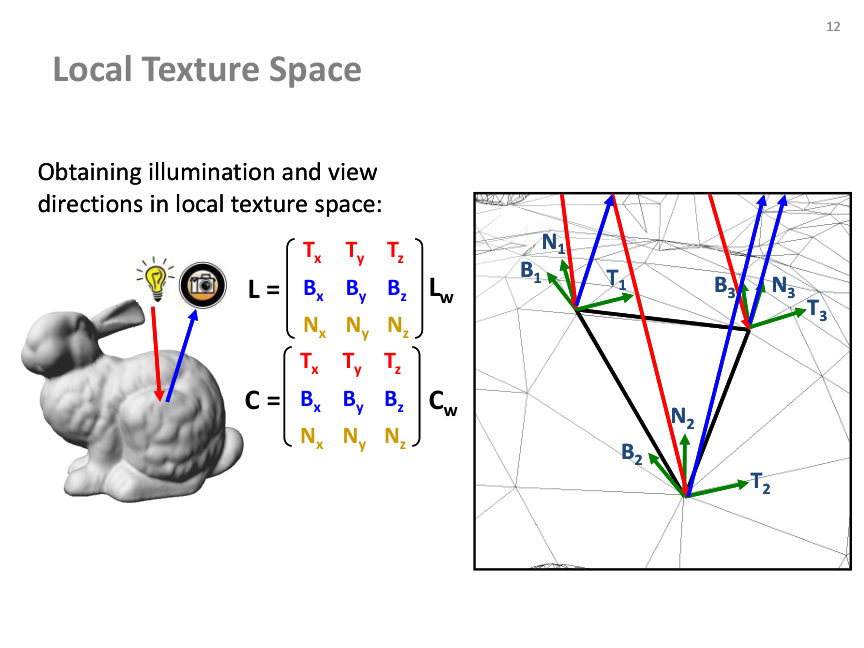
Jiří Filip · Export PDF 7. 10. 2026 · termín výuky neověřen · PDF, strana 12
Souřadnice a interpolace
Per-triangle versus per-pixel LTS
The source compares a 1000-triangle model using a per-triangle frame and an interpolated per-pixel frame.
The original renderings show how interpolation changes the appearance.
Source credit: Haindl & Filip, Material Appearance.
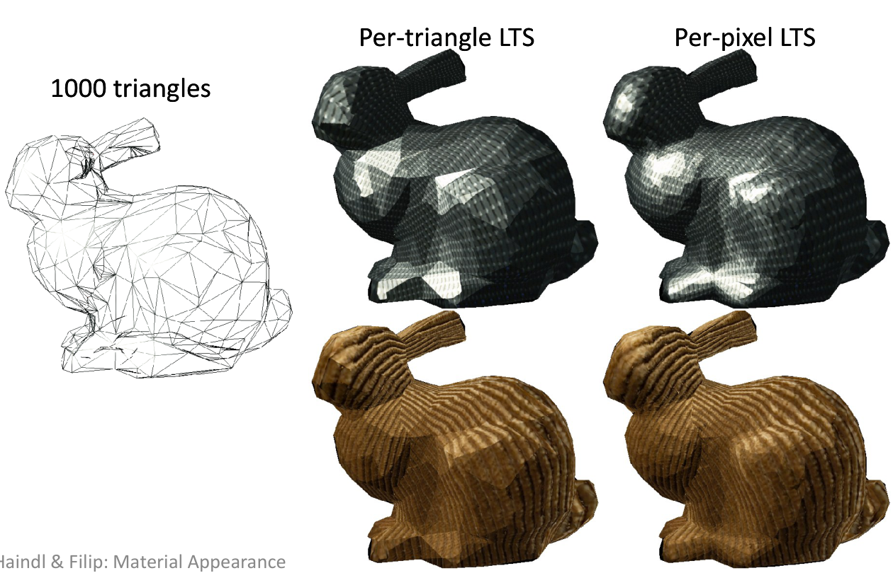
Jiří Filip · původní ilustrace · PDF 13
Původní snímek · 13
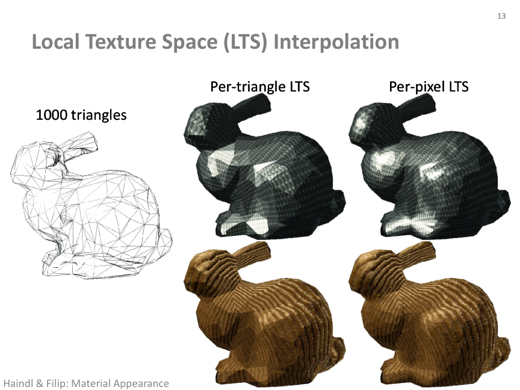
Jiří Filip · Export PDF 7. 10. 2026 · termín výuky neověřen · PDF, strana 13
Souřadnice a interpolace
Local texture-space interpolation
Barycentric weights are ratios of corresponding triangle areas; w1+w2+w3=1.
Interpolate T, B and N from vertex values using the same weights.
The source notes hardware support for intra-triangle interpolation in shaders.
Poznámka GRAFIT: interpolace vektorů obecně nezachová jejich jednotkovou délku ani kolmost. Při použití lokálního rámce je potřeba jeho normalizace a případná ortogonalizace.
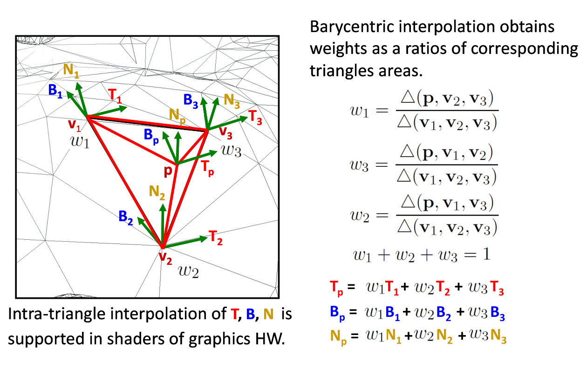
Jiří Filip · původní ilustrace · PDF 14
Původní snímek · 14
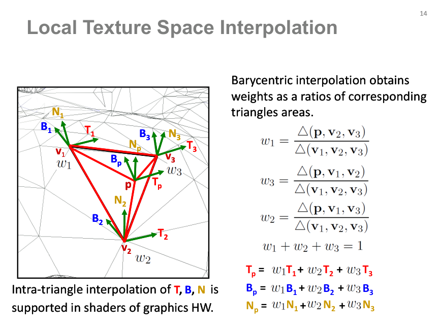
Jiří Filip · Export PDF 7. 10. 2026 · termín výuky neověřen · PDF, strana 14
Souřadnice a interpolace
Barycentric interpolation
Weights describe a point as p = w1·v1 + w2·v2 + w3·v3, with w1+w2+w3=1.
All three weights strictly positive: point inside the triangle.
A zero weight: point on the opposite edge when the other weights are nonnegative. Two zero weights: the corresponding vertex.
A negative weight places the point outside across the opposite edge. Source: Möbius 1827; Coxeter 1969; Fauvel et al. 1999.
Poznámka GRAFIT: interpolace vektorů obecně nezachová jejich jednotkovou délku ani kolmost. Při použití lokálního rámce je potřeba jeho normalizace a případná ortogonalizace.
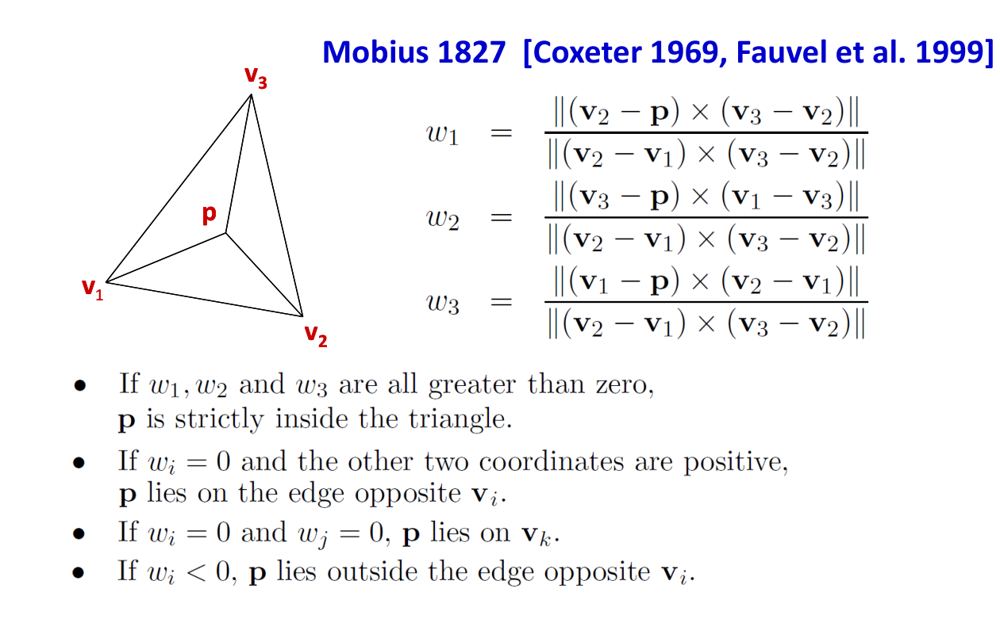
Jiří Filip · původní ilustrace · PDF 15
Původní snímek · 15
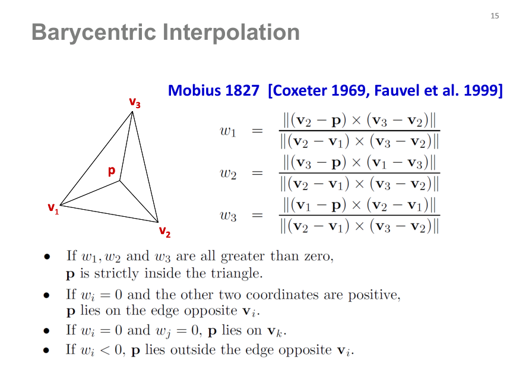
Jiří Filip · Export PDF 7. 10. 2026 · termín výuky neověřen · PDF, strana 15
Souřadnice a interpolace
Measured-direction interpolation
Compare no interpolation, local texture-space interpolation and LTS + BTF interpolation.